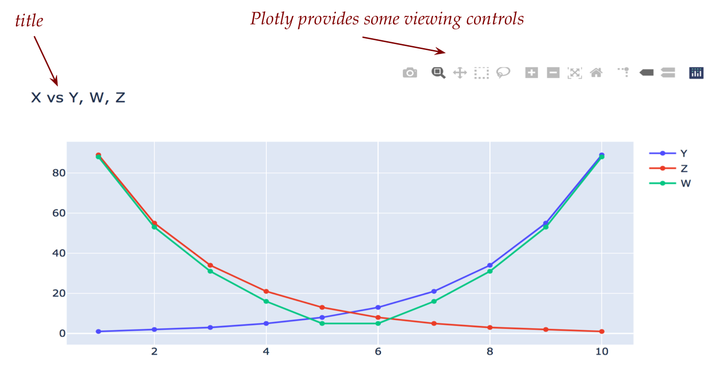
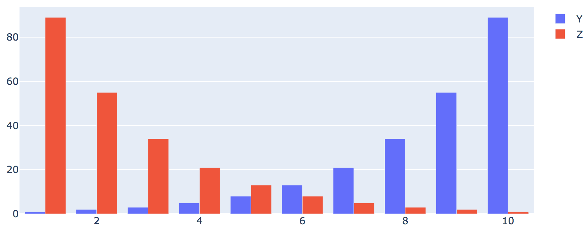
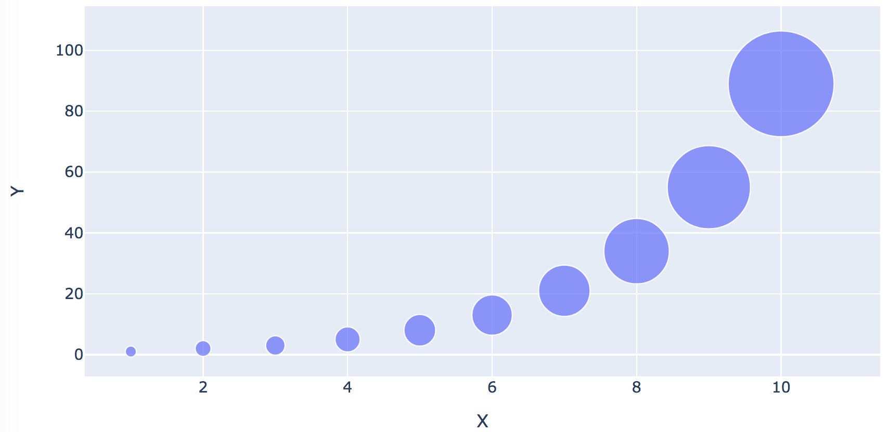
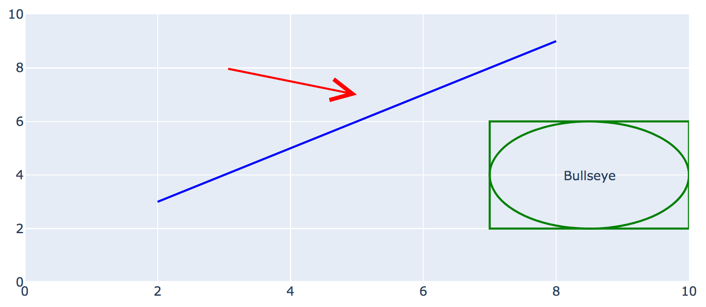
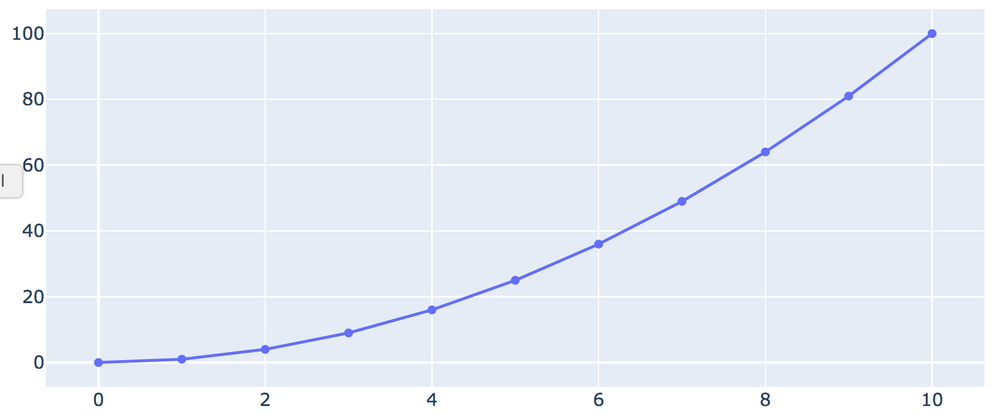
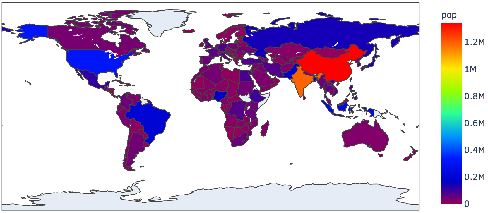

Module 1: Choropleth Maps
Objectives
This is a somewhat light module aimed at introducing a new member of the family: datatool
- We’ve already worked with drawtool and wordtool.
- Drawtool is based on a popular Python graphing package called Matplotlib:
- Matplotlib is a powerful package for all kinds of plotting.
- However, it can be difficult to understand how to use effectively.
- To simplify, we developed drawtool so that you can perform both plotting and simple drawing.
- Plotly is a recent competitor of Matplotlib:
- Plotly is designed to be web-friendly, to let Python programs have output that renders in a browser, so that websites can display nice graphics.
- Plotly has stronger support for maps (as in geographic maps) than Matplotlib.
- However, just like Matplotlib, it can be difficult to use, especially since there are two fundamentally different kinds of maps.
- Pandas is perhaps the most popular Python package aimed at data handling and data science applications. It too takes a while to learn.
- Thus, to simplify, we have developed datatool, to make it easy to do typical things like plotting graphs but also to work with data files, and especially, maps.
Datatool does not display via its own GUI. Instead, datatool uses a browser, depending on whether you are using Mac or Windows:
- Mac/Linux: If you don’t have Firefox, you will need to install Firefox and have that running (open a tab to any webpage).
- Windows: Your default browser will do.
- Also, you will need to be connected (online) because datatool downloads map data from certain websites.
1.0 Getting set up for datatool
If you’ve downloaded Anaconda as directed earlier in the course, you should already have Pandas and Plotly installed.
Let’s give this a test.
To use datatool, you must follow the separate instructions for Mac and Windows:
- Mac users: you need to have Firefox running and open to any page, such as this one.
- Windows users: Your default browser will do.
You also need to be connected because datatool downloads some map-drawing files from designated websites.
1.1 CSV data
When hearing buzzwords like “data science” or “data analytics”, one is led to ask: exactly what is meant by data, and what form does it take on computers?
We need to be aware of two such forms:
- One is the form it takes as a file.
- The other is: how do we store it in our Python code?
Here are some basic types of data files:
- Text data. This is just plain text but can be found (and stored) as files of different kinds: Word files, plain text files (as we’ve seen with our text examples), and webpages (which contain text).
- Example: see this file
- Here, the data is in plain text format, which means we can use something like wordtool to iterate through words, letters etc.
- Once we’ve read the words in the file, our program could store the words in a list.
- Numeric-only data. This kind of data is often presented in plain text files:
- Example: see this file, which has pressure-difference readings from two weather stations in the Pacific (it’s called the Southern Oscillation, used to predict El-Nino).
- There’s one reading for each month, a list of 12 numbers.
- Numbers are often stored in arrays inside a program.
- Image data. Images are stored in various formats such as JPG or PNG.
- Example: see this JPG file.
- As we’ve seen, a color image is stored as 3D array in a program.
{kind=link}
CSV files for mixed data:
Most real world data sets combine different data together.
For example, even in purely numeric data (such as the weather data example above), we might have multiple “columns” of data as in:
Oscillation Year Year Month ---------------------------------------------- -0.7 1955 1955 1 1.3 1955 1955 2 0.1 1955 1955 3 -0.9 1955 1955 4 0.8 1955 1955 5 1.6 1955 1955 6 1.7 1955 1955 7 1.4 1955 1955 8 1.4 1955 1955 9 1.5 1955 1955 10 1.4 1955 1955 11 0.9 1955 1955 12But even more commonly, numeric and text data are often found together, as in:
city lat long country iso2 iso3 population Tokyo 35.6897 139.6922 Japan JP JPN 37977000 Jakarta -6.2146 106.8451 Indonesia ID IDN 34540000 Delhi 28.6600 77.2300 India IN IND 29617000 Mumbai 18.9667 72.8333 India IN IND 23355000 Manila 14.5958 120.9772 Philippines PH PHL 23088000 Shanghai 31.1667 121.4667 China CN CHN 22120000 Sao Paulo -23.5504 -46.6339 Brazil BR BRA 22046000 Seoul 37.5833 127.0000 Korea, South KR KOR 21794000 Mexico City 19.4333 -99.1333 Mexico MX MEX 20996000 Guangzhou 23.1288 113.2590 China CN CHN 20902000This type of table-like format is possibly the most common type of data.
While one could store this in a plain text file as in this example, it is much more convenient to use the CSV format.
The same data in CSV format looks like this:
city,lat,long,country,iso2,iso3,population Tokyo,35.6897,139.6922,Japan,JP,JPN,37977000 Jakarta,-6.2146,106.8451,Indonesia,ID,IDN,34540000 Delhi,28.66,77.23,India,IN,IND,29617000 Mumbai,18.9667,72.8333,India,IN,IND,23355000 Manila,14.5958,120.9772,Philippines,PH,PHL,23088000 Shanghai,31.1667,121.4667,China,CN,CHN,22120000 Sao Paulo,-23.5504,-46.6339,Brazil,BR,BRA,22046000 Seoul,37.5833,127.0,"Korea, South",KR,KOR,21794000 Mexico City,19.4333,-99.1333,Mexico,MX,MEX,20996000 Guangzhou,23.1288,113.259,China,CN,CHN,20902000- Whitespace is removed
- Commas are used to separate data.
For the above example, this is the CSV file, which you can store and open in Excel or Google-sheets.
- You can see why CSV stands for “Comma Separated Values”.
Next, let’s write some code to work with CSV files.
from datatool import datatool
dt = datatool()
dt.load_csv('cities.csv')
dt.print_data()It is often convenient CSV data into an array, as in this example:
from datatool import datatool
dt = datatool()
dt.load_csv('cities.csv')
D = dt.get_data_as_array()
print(D)1.2 Using datatool for plotting
Often, one of the first things we do with data is to plot the data, or at least parts of it.
With datatool, that is as simple as this:
from datatool import datatool
dt = datatool()
dt.load_csv('simpledata.csv')
# A basic line graph. 'X' and 'Y' are the column headers.
dt.line_graph('Y', 'X')
dt.display()Let’s examine the data:
The CSV file looks like this:
X,Y 1,1 2,2 3,3 4,5 5,8 6,13 7,21 8,34 9,55 10,89This is merely a list of points with x,y coordinates.
Mac Users: Don’t forget to have Firefox running before you run the program.
One can plot categorical (non-numeric) data as well:
from datatool import datatool
dt = datatool()
dt.load_csv('cities.csv')
dt.line_graph('city', 'population')
dt.display()It is possible to depict multiple curves on one plot:
Consider this data set: simpledata2.csv,
X,Y,Z,W 1,1,89,88 2,2,55,53 3,3,34,31 4,5,21,16 5,8,13,5 6,13,8,5 7,21,5,16 8,34,3,31 9,55,2,53 10,89,1,88Here, there are four columns.
We will plot the 2nd, 3rd, and 4th columns against the 1st:
from datatool import datatool dt = datatool() dt.load_csv('simpledata2.csv') # Note: how to place a title on a graph: dt.set_title('X vs Y, W, Z') dt.line_graph('X', 'Y') dt.line_graph('X', 'Z') dt.line_graph('X', 'W') dt.display()
When Plotly (via datatool) displays in the browser, there are additional controls included, such as zoom in/out: 
Next, let’s use datatool to plot a bar chart:
from datatool import datatool
dt = datatool()
dt.load_csv('simpledata2.csv')
dt.bar_chart('X', 'Y')
dt.bar_chart('X', 'Z')
dt.display()Which produces 
Next up: bubble charts
from datatool import datatool
dt = datatool()
dt.load_csv('simpledata2.csv')
dt.bubble_chart('X', 'Y', bubblesize='Y')
dt.display()Which produces 
- We need to tell datatool which column to use for the size of the bubbles.
- It is possible to use one column for the center of each bubble (as if plotting points) and another for bubble sizes.
1.3 Using datatool for drawing
Datatool as drawing functions similar to drawtool:
from datatool import datatool
dt = datatool()
# Set the range along each axis:
dt.set_x_range(0, 10)
dt.set_y_range(0, 10)
# Set line width:
dt.set_draw_width(2)
# Draw some lines and shapes
dt.set_draw_color('blue')
dt.draw_line(2,3, 8,9)
dt.set_draw_color('green')
dt.draw_rectangle(7,2, 3,4)
dt.draw_ellipse(7,2, 3,4)
dt.set_draw_color('red')
dt.draw_arrow(3,8, 5,7, 5, 2)
# Draw text
dt.draw_text(8.5, 4, 'Bullseye')
dt.display()Which produces 
1.4 Using datatool with generated data
In some situations, we end up generating data with our code. This means the data is not in some CSV file.
For example, suppose we want to plot the numbers 0 through 10 and their squares using:
for i in range(11):
x = i
y = x * x # The square of x
# We'd like to plot these x,y values as points in a graphThere are two options:
- Create a CSV from the above program, and then load that into datatool.
- Avoid creating a file and directly feed the data into datatool.
Let’s use the latter approach since it avoids having to create a file.
from datatool import datatool
import numpy as np
dt = datatool()
# Make an empty array with zeroes (dtype='f' means float numbers)
# Other kinds are 'int'
A = np.zeros( (11, 2), dtype='f')
# Now fill the array with generated data:
for i in range(11):
x = i
y = x * x
A[i,0] = x # First col has x
A[i,1] = y # Second has y
# We now want to plot the second column in A against the first
# Hand the array over to datatool, specifying column names:
dt.set_data_from_array(A, col_headers=['X','Y'])
dt.line_graph('X', 'Y')
dt.display()Which produces 
Notice how we ask Numpy to create an array of the right size:
A = np.zeros( <b>(11, 2)</b>, dtype='f')That is, 11 rows for the numbers 0 through 10 and 2 columns for the x,y values.
Notice that (11, 2) is specified as a tuple.
(Recall tuples from Module 1 of this unit.)The array A now has 11 rows and 2 columns, with each entry set to 0.
After that, we fill in the values we generate:
for i in range(11): x = i y = x * x A[i,0] = x A[i,1] = yWhich we could shorten to:
A[i,0] = i A[i,1] = i * iThe CSV equivalent (which we don’t need here) would look like this:
0,0 1,1 2,4 3,9 4,16 5,25 6,36 7,49 8,64 9,81 10,100
1.5 Using datatool for maps
One of the more exciting uses of Plotly is to display maps and draw on them.
Let’s think about what a map really is:
- Whereas a standard 2D plot depicts an x-axis and a y-axis, a map could be a region of the globe or the whole globe forced into 2D depiction (sometimes awkwardly).
- The coordinate system uses angles called latitudes and longitudes.
There are fundamentally two types of digital maps:
- A vector map or line map is a collection of lines and other such geometric entities which, if drawn like lines typically are, will show a map.
- A vector map is most often a very basic map with simple lines for boundaries.
- Vector maps are efficient because it doesn’t take much storage space to store lines (you only need the coordinates of the end points of each line).
- A tile map is really a collection of tiles put together to form a map:
- An individual tile can itself be an image (as in a ‘satellite view’) or a combination of image and geometric objects.
- Tilemaps generally look nicer because tiles can be pre-built with accurate and rich detail.
- However, detailed tiles can be slow to load, as you’ve no doubt notice when zooming quickly with Google-maps.
Because of these and other differences, map drawing can sometimes be confusing.
Let’s look at an example of a simple line-map:
from datatool import datatool
dt = datatool()
dt.load_csv('cities.csv')
# We need to specify which columns of cities.csv have
# the latitude and longitude, respectively.
dt.linemap('lat', 'long')
dt.display()You need to be connected to the internet because datatool downloads map data from certain websites.
You may see an “Aa” legend by the side, depending on which version of Plotly was installed by Anaconda.
The CSV file looks like this;
city,lat,long,country,iso2,iso3,population Tokyo,35.6897,139.6922,Japan,JP,JPN,37977000 Jakarta,-6.2146,106.8451,Indonesia,ID,IDN,34540000 Delhi,28.66,77.23,India,IN,IND,29617000 Mumbai,18.9667,72.8333,India,IN,IND,23355000 Manila,14.5958,120.9772,Philippines,PH,PHL,23088000 Shanghai,31.1667,121.4667,China,CN,CHN,22120000 Sao Paulo,-23.5504,-46.6339,Brazil,BR,BRA,22046000 Seoul,37.5833,127.0,"Korea, South",KR,KOR,21794000 Mexico City,19.4333,-99.1333,Mexico,MX,MEX,20996000 Guangzhou,23.1288,113.259,China,CN,CHN,20902000The columns that have the latitude and longitude happen to be called
latandlong.Which is what we need to tell datatool:
dt.linemap(<b>'lat', 'long'</b>)Datatool then (via Plotly) draws a world map as default with one red dot per latitude-longitude pair extracted from those columns.
Next, let’s label the cities and draw a line:
from datatool import datatool
dt = datatool()
dt.load_csv('cities.csv')
dt.linemap('lat', 'long', 'city')
# This needs to come <b>after</b> the linemap() function call.
dt.linemap_add_line(-23.5504,-46.6339, 19.4333,-99.1333)
dt.display()The city labels are crowded and overwrite each other in places. In general, map labeling is a challenging issue.
There is a more detailed version of linemap drawing that allows one to set the size of labels (markers), create “hover” text, and so on:
dt.linemap_detailed(
'lat',
'long',
marker_color='Red',
marker_size=10,
marker_text='city',
marker_text_size=9,
hovertext=['city', 'population'],
showlegend=False)1.6 Choropleth maps
A choropleth map shows regions in colors that imply a quantity associated with a region.
Datatool displays choropleths using linemaps.
For example, let’s show country populations from our running example in a choropleth map:
from datatool import datatool
dt = datatool()
dt.load_csv('2011_population.csv')
# Changes the colorscale of the choropleth_iso3()
dt.set_color_scale('rainbow')
# More choices here: https://plotly.com/python/builtin-colorscales/
# The choropleth_iso3() function uses a standard code for countries.
# The second parameter describes which column to use for heat-map
# like coloring. The third is what to show when the mouse hovers.
dt.choropleth_iso3('countrycode', 'pop', 'country')
dt.display()Which produces: 
1.7 Using datatool for maps: tilemaps
Let’s look at our 10 cities using a tilemap:
from datatool import datatool
dt = datatool()
dt.load_csv('cities.csv')
# The first two identify the lat/long columns. The third
# is the column with the data to be drawn.
dt.tilemap_attach_col_lat_long('lat', 'long', 'city')
dt.tilemap()
dt.display()- For tilemaps, we first need to identify the columns that have the latitudes and longitudes, along with the “data” column.
- The data column has the strings that we want shown at those latitudes and longitudes.
Now let’s draw a line between two cities:
from datatool import datatool
dt = datatool()
dt.load_csv('cities.csv')
dt.tilemap_attach_col_lat_long('lat', 'long', 'city')
# For tilemaps, line drawing must <b>precede</b> the call to tilemap.
dt.tilemap_add_line(-23.5504,-46.6339, 19.4333,-99.1333)
dt.tilemap()
dt.display()The above shows the full world map centered at latitude 0, longitude 0.
A more detailed version of the tilemap function allows you to set the zoom and center, among other items:
dt.tilemap_attach_col_lat_long('lat', 'long', 'city')
# Define a different center:
c = dict(lat = 30, lon = 120)
# The detailed version specifies hover data, the center, a zoom level
dt.tilemap_detailed(hover_name='city', hover_data=['city'], center=c, zoom=2, title='Some cities')There is also an intermediate-detail version with just center, zoom and title:
dt.tilemap_attach_col_lat_long('lat', 'long', 'city')
c = dict(lat = 30, lon = 120)
# Intermediate-detail: center, zoom, title:
dt.tilemap_czt(center=c, zoom=2, title='Some cities')Finally, let’s look at an example with street maps, where tilemaps really stand out:
from datatool import datatool
dt = datatool()
dt.load_csv('parkingtickets_June2020.csv')
dt.tilemap_attach_col_lat_long('LATITUDE', 'LONGITUDE', 'FINE_AMOUNT')
# DC's lat/long:
dc_latlong = dict(lat = 38.92, lon = -77.07)
dt.tilemap_detailed(
hover_name='LOCATION',
hover_data=['VIOLATION_PROC_DESC'],
center=dc_latlong,
zoom=11,
title='DC Parking Violations June 2020')
dt.display()